「日常衣物」
-

美敦力胰岛素泵·售后服务
“纯棉的，天然的，舒适的材料是适合糖尿病人的。尺码，款型，和品牌都没有特殊的要求。”
-

省级医院·糖尿病科医生
“比较舒适的、透气性好的、吸汗的柔软的、纯棉料衣服。”
-

糖尿病患者·带病10年
“要注意‘糖尿病足’。是糖尿病慢性并发症的一种。要每天保持脚底卫生，进行足底检查。发现破烂，及时就医。每天用温水洗脚。穿纯棉的袜子。袜子不要太小。穿舒适的鞋子。鞋子的大小要大出一个手指。”
小贴士
· 参考方面 ·
-
衬衫/毛衣
对于上衣的要求，面料很重要。纯天然和纯棉的材料是首选。上衣应该宽松舒适并且没有太多装饰
-

鞋子
糖尿病患者的脚部非常脆弱。患者通常有血液循环不畅的问题。鞋子不合脚可能会引起溃疡，感染甚至截肢的问题。尽量选软性皮革及大小吻合的鞋子。避穿夹脚拖鞋
-

袜子
糖尿病专用袜是首选。袜口宽松有弹性，具有抗菌功效，吸湿排汗，保暖功能，光滑不磨脚
-

裤子
裤腰不应过高过紧，避免影响血液循环以及胰岛素泵的佩戴。糖尿病患者排尿频繁。宽松舒适的裤子会避免不便

小结
追求时尚是每个人的权利。糖尿病患者在可以随意穿搭的同时，衣服的材质和尺寸也尤为重要。追求舒适并且质量好的衣服也是追求高质量生活的体现。
返回顶部